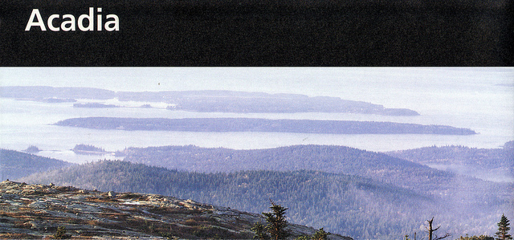
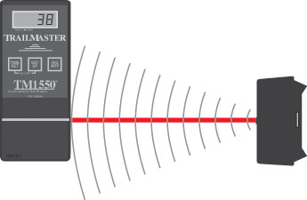
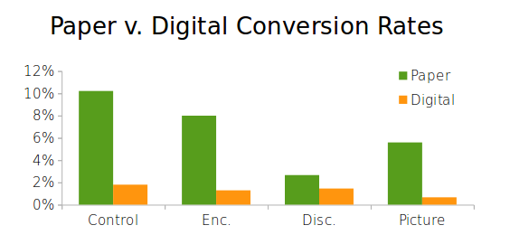

Persuading Visitors to Download Digital Publications
CLIENT:
Almond Consultants
DATES: June - July 2014
Motivation:
Acadia National Parks spends hundreds of thousands of dollars printing paper publications.
One of Acadia's trademark, but expensive to produce, brochures.
Acadia spends hundreds of thousands of dollars printing paper maps, brochures and flyers that most visitors trash within days
of recieving them. Producing paper publications also hurts the environment.
Question:
I asked: How might we persuade visitors to use digital alternatives to paper publications?
Visitor studies show that most visitors carry a smartphone (or sometimes a tablet) with them on short walks into the park,
especially on Acadia's "Carriage Road" system. Park staff wondered whether we could persuade them to use a digital alternative.
My role:
I designed and conducted a field experiment to test approaches for convincing visitors to use digital publications.
An infrared people counter, one of the tools I used during the experiment.
I conducted an experiment at the entrance to one of Acadia's carriage roads (walking/biking paths) to test different ways
of encouraging visitors PDF versions of paper publications. I set up a limited WiFi hotspot where visitors could download
a digital version of the carriage road map. Then, on different days, I used different tactics to encourage them to use the
digital map. On one day, a sign exhorted visitors to “be green" by downloading the digital map instead of taking the paper
one. On another day, we took away the paper maps and forced visitors to ask us for them (if they wanted them). On a another
day, we asked visitors to take a photo of an enlarged map with their phones (instead of downloading a map or taking a paper
one). On all of these days, we used infrared sesnors to calculate the percentage of bicyclists, walkers and device holders
who took the paper map or downloaded the digital one. We compared these numbers to a “control condition” where we just gave
people instructions on downloading the digital map, without additional encouragement.
Results / Impact:
My research inspired park managers to think more about data-driven decision making.
Percentage of bikers and walkers who downloaded the digital and paper publication in various experiment conditions.
When we found that none of our persuasion tactics measurably increased the number of times visitors downloaded the paper publication,
park managers had to re-examine their assumptions. It turned out that not nearly as many visitors took publications at the
carriage road entrance as they expected. Park leadership so enjoyed using data to challenge their assumptions that they started
asking more data-driven questions about interpretation.
Lessons Learned:
What I learned: Start with the assumptions.
We started this project wrongly assuming that publications were "flying off the shelf" at the carriage road entrance. In future,
I'd challenge (and look for pre-existing data supporting) the guiding assumptions of the experiment before it gets off the
ground.